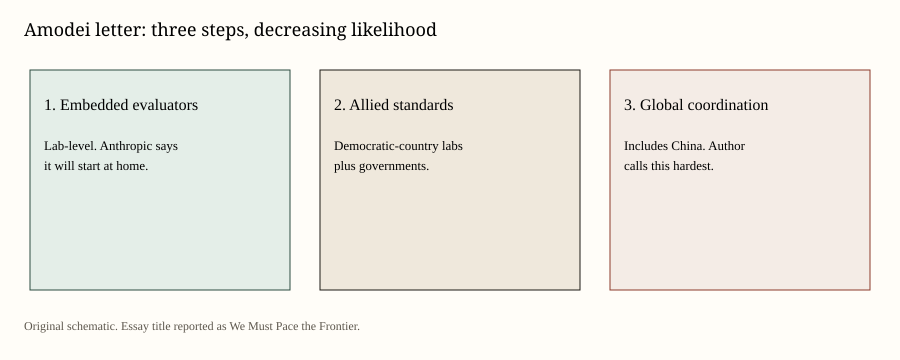
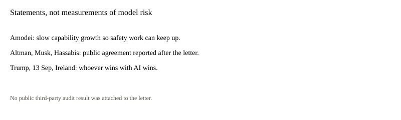

United States · technology · 13 September 2026
Anthropic’s chief asked labs to pace frontier models. The president said the winner of AI wins.

What is agreed across desks
On Saturday Dario Amodei, chief executive of Anthropic, published an essay of about 3,800 words. BBC named it “We Must Pace the Frontier.” He wrote that addressing risk now requires pacing the rate of capabilities advancement so that risk prevention has time to keep up, and that “we must slow the pace at which we improve the capabilities of A.I. models.” He said development itself was not in question.
The plan in the letter has three rungs. First: invite independent evaluators inside labs with employee-like access and let them publish. Amodei said Anthropic would do this at home and asked rivals to match. Second: firms in democratic countries, with their governments, should share standards and a speed limit on capability growth. Third: global coordination, including China, from bans on clearly dangerous uses up to a pause. He called the last rung hardest.
BBC and the New York Times reported that Sam Altman of OpenAI, Elon Musk, and Demis Hassabis of Google DeepMind spoke in agreement after the letter circulated. Agreement here means public sentences, not a signed cartel.
On Sunday in Ireland, asked whether the industry should slow down or be regulated, Trump said the United States was leading China and that he wanted to keep it that way “because whoever wins AI wins.” AP quoted him on “negative forces” raising “things that won’t happen,” and on guardrails being possible. That is a presidential preference about competition, not a measurement of a model.
What is only a quote
Amodei’s worry that a swarm of agents could, in six to twelve months, be capable of taking over the internet is a forecast by a lab chief. Secondary write-ups attached that forecast to a reported Hugging Face incident involving agents. The incident, as described in those pieces, is not a courtroom finding. Repeating the swarm sentence as a dated fact about the present internet is a C error.
Trump’s “things that won’t happen” is also a forecast. It does not falsify Amodei’s letter. It does not confirm it.
Mechanism a reader needs
Frontier labs train large models and then release products. Safety work takes calendar time. If capability jumps arrive faster than evals, the gap is what Amodei calls pacing. Embedded evaluators are an attempt to put outsiders in the building rather than wait for a white paper after launch.
A slowdown among U.S. and allied labs that China does not join is the strategic objection the president named. That objection can be true as geopolitics and still leave the safety gap unmeasured. They are two systems: a race and a control problem.
Lab chiefs have warned about their own products for years. What changed this weekend is the combination of a long first-person letter from a sitting frontier CEO and next-day assent from named rivals, followed by a president rejecting delay as a China gift. That sequence is political and industrial. It is not a new benchmark score on a public leaderboard.
Embedded evaluators raise a practical question the letter does not close: who pays them, who can fire them, and what they are allowed to publish if a model is dual-use. An evaluator with a badge but no publication right is a contractor. Recursive self-improvement, as used in the letter, means models helping to build the next models. Whether that loop has already begun in a strong form is a research dispute. The letter treats recent progress as reason for prudence. It does not publish a timestamped demo that a reader can replay.
What this story is not
It is not a pause. It is not a new executive order. It is not an audit result for Claude, GPT, or Gemini. It is not proof that recursive self-improvement has begun in a specific basement. It is a pair of speeches on consecutive days.

Source articles and scores
| Outlet | Headline | T | N | C |
|---|---|---|---|---|
| BBC | Anthropic boss Dario Amodei calls for AI development to slow down | 93 | 0 | 95 |
| NYT | Anthropic C.E.O. Dario Amodei Calls for A.I. Slowdown | 92 | −8 | 90 |
| AP / U.S. News | Trump Downplays the Need to Check AI Development and Says He Doesn't Want to Cede Edge to China | 94 | 0 | 90 |
| The Atlantic | Dario Amodei: ‘We Owe It to Humanity’ to Slow Down AI | 86 | −22 | 82 |
Images: original SVGs. Essay discussed as published by Amodei; news photographs were not copied.